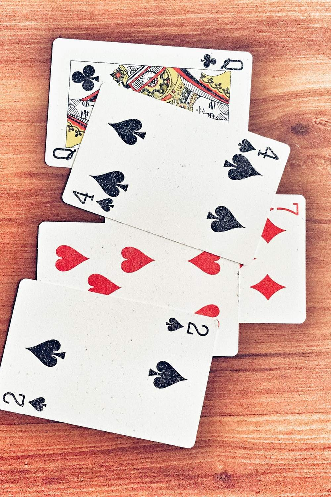
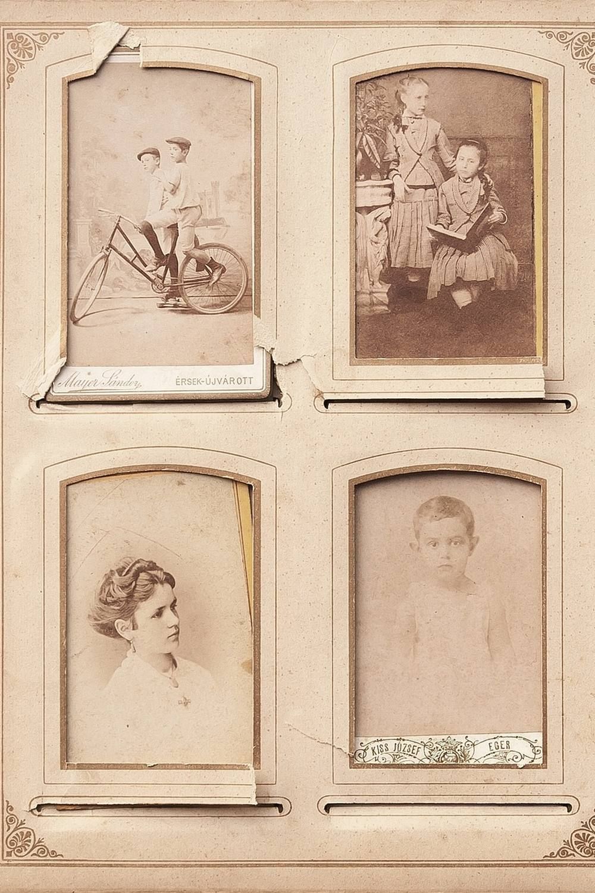

November 3, 2026 · By Pixel Punk Studio
You drive over, you hug, you ask how the food is, and twenty minutes later you are both watching the television in a small room. Visits to a parent in assisted living often go like this, not because there is nothing to say, but because there is nothing to do. A shared activity takes the pressure off the conversation: your hands are busy, the talk comes on its own, and the hour feels like time together instead of a check-in.
Before you go: pack a small visit bag
- Two or three large print puzzles printed at home, and two pencils.
- A deck of playing cards, ideally with large numbers.
- A few photos or one small album.
- A treat to share: their favorite cookies, a seasonal fruit, a good tea.
- Something to leave behind: a puzzle for tomorrow, a card from the grandchildren.

10 easy things to do together in an hour
- Solve a word search together. One puzzle, one of you reads the words, the other hunts. It works even on a tired day.
- Play a simple card game: rummy, crazy eights, war or a game of solitaire you play together.
- Look through old photos and ask the questions you never asked: who is that, where was this, what happened next?
- Record a story. Ask about their first job or how they met, and record it on your phone for the family.
- Read aloud: the local paper, a short story, or letters from the grandchildren.
- Listen to their music. A playlist from the year they were twenty brings back stories.
- Do their nails or a hand massage with a nice lotion: calm, close and no talking needed.
- Take a slow walk to the garden, the lobby or the end of the corridor.
- Write cards together for birthdays or the holidays; you write, they dictate.
- Plan the next visit: pick the next puzzle, the next photos or the next treat, so there is something to look forward to.

When the visit gets hard
- Tired or not in the mood: switch to something passive, like music or reading aloud, and keep the visit shorter.
- Hard of hearing: sit close, face to face, with the TV off, and use activities that need few words.
- Memory changes: choose easy puzzles and familiar old photos, and don't correct the details of a story.
- Small room, shared space: a lap tray or the corner of a table is all a puzzle or a card game needs.
Leave something behind
A puzzle left on the table, a card from the grandchildren pinned by the bed or a new photo in a frame keeps the visit going after you leave, and gives the staff and other residents something to ask about.
Free printables for your next visit
Print a few of our free puzzles before you go: a retirement word search, a jumbo print page with 30 point letters and a cozy hygge puzzle, each with its answer key. For weekly visits, Retirement Word Search, Jumbo Christmas Word Search and Cozy Winter Hygge Word Search have dozens more, printed on one side so each page can be torn out and left behind.